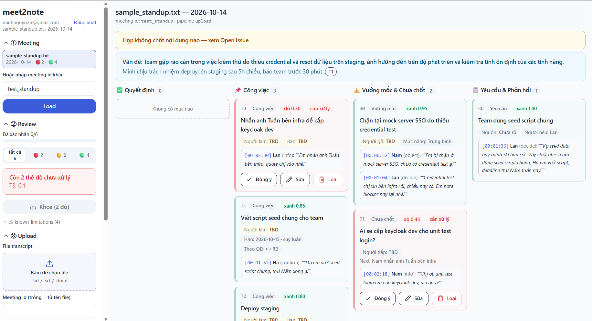

Không tóm tắt — chốt trạng thái cuối kèm bằng chứng từng câu nói. Triết lý: LLM đề xuất, code kiểm chứng, con người chốt.
họp lại của team 8 người ≈ 1–1,5 ngày công lãng phí + trễ deadline
mỗi PM mất mỗi tháng chỉ để nghe lại và hỏi lại
chi phí sửa khi ghi sai 1 quyết định so với chi phí ghi đúng
3 nỗi đau đắt nhất của biên bản họp
Luồng 4 bước dưới 5 phút
Chạy thật trên link public
Vì sao dám tin output của AI?
Stack, eval, bước tiếp theo
Đầu họp đề xuất A, cuối chốt B vì rủi ro chi phí. Biên bản liệt kê cả hai ngang nhau → team thi công nhầm A.
"Anh em triển khai nhé", "sớm nhé" → không owner, không deadline, không link tới quyết định → việc rơi vào khoảng trống.
Vì sao đổi A→B, ai phản đối, điều kiện gì thì đảo lại? Người nghỉ việc mang theo lý do.
"Thách thức không phải speech-to-text hay tóm tắt — mà là mất trạng thái cuối và mất khả năng truy vết."
Transcript .txt/.srt/.docx + ngày họp + người tham gia + vai trò
Cắt topic, gán vai trò đề xuất/phản đối/chốt, entity-linking "em/tuần sau" → tên/ngày, phát hiện đảo ngược A→B
Kanban 4 cột + confidence đỏ vàng xanh + sửa owner/deadline
Gate khóa khi còn thẻ đỏ → minutes.md + tasks Jira CSV tải về máy
Decision · Task · Blocker · Requirement · Open Issue · Knowledge — mỗi item có confidence, lý do, và ≥1 evidence.
Quote nguyên văn cấm viết lại · Không bịa owner/deadline → TBD · Ai sửa gì đều log audit.
Tới đây chuyển sang web demo (Alt+Tab). Khán giả chụp ảnh slide này là tự thử được sau giờ chiếu.
Quyết định · Công việc · Vướng mắc & Chưa chốt · Yêu cầu & Phản hồi — lọc theo badge, phím tắt j/k/a/e/x.
Vấn đề + kết quả chính, mỗi gạch đầu dòng gắn ref tới ID item đã chốt.

Liệt kê A và B ngang nhau, mất thứ tự thời gian và người chốt.
Chỉ tồn tại một quyết định cuối: B final.
Mọi item bấm tới câu gốc + timestamp + speaker. Quote viết lại → gắn cờ evidence_mismatch, sai timestamp → sửa về turn khớp thật.
Cấm bịa owner/deadline (R1) · cấm đoán ngày (R2) · họp không chốt → Open Issue (R3) · còn thẻ đỏ → export khóa cứng UI lẫn API.
Không suy ra được → TBD + hiện known_limitations trên UI. Ca khó A→B→A thì flag cho host thay vì tự chọn bừa.
Python + Pydantic v2FastAPI + JWT Postgres 16React + Tailwind + shadcn Ollama local
Access 60 phút + refresh httpOnly 7 ngày. Mỗi user chỉ thấy meeting của mình — sai chủ trả 404 như không tồn tại.
LLM chỉ đề xuất JSON thô, còn lại code lo:
| Ca | Kịch bản | Kết quả |
|---|---|---|
| tc1 | Planning + chốt giả | Đạt |
| tc2 ⭐ | Đảo A→B | Đạt |
| tc3 | Vòng vo, không chốt | Đạt |
| tc4 | Entity người + ngày | Đạt |
| tc5 | A→B→A | Trung thực |
| tc6 (M3) | Họp dài: chốt giả + hedge + sửa hạn | Đạt (BEFORE→AFTER) |
Đo 4 chỉ số dùng được: Decision Accuracy · Task Usability · Time-to-value <5 phút · Adoption.
Schema → M3 gates → API → auth → download. Eval fixture 6/6, live LLM 5/5. Chi tiết: eval/report.md.
Pipeline + review 2 phút + export + multi-user + link demo chạy thật.
20–30 họp, 5 team: đo Decision Accuracy >95%, Task Usability >85%, Time-to-value <5 phút.
Sync Jira/Slack 1-chiều · tìm kiếm + hỏi-đáp xuyên họp · template theo loại họp · SSO + redaction PII.
① Vấn đề là mất trạng thái cuối, không phải thiếu biên bản
② Giải pháp là state + evidence + host chốt 2 phút
③ Trung thực mặc định: thà TBD còn hơn bịa
Cảm ơn! Mời câu hỏi. 🙌